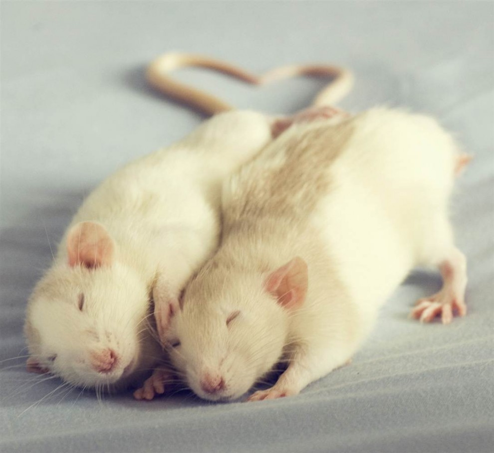
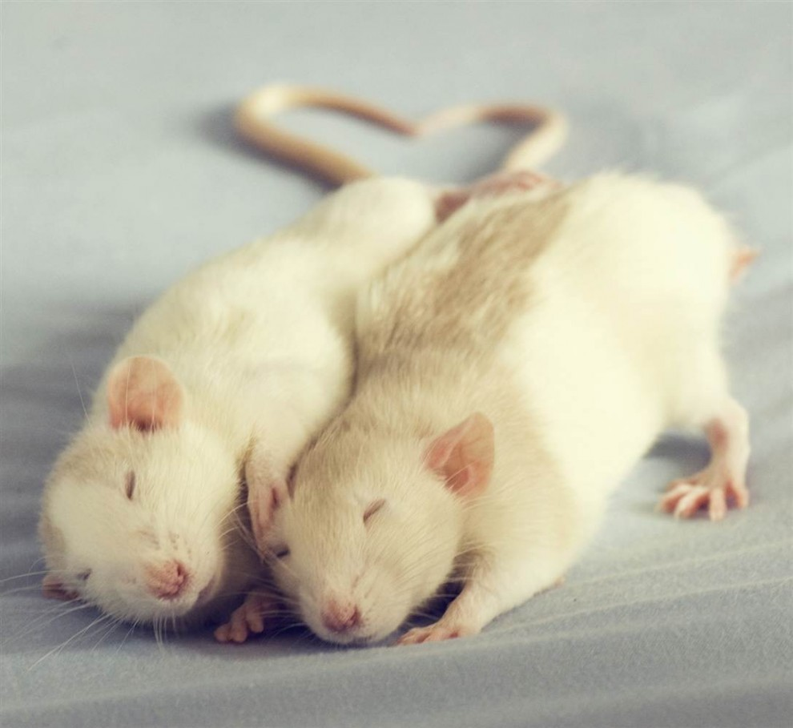

Дамбо
Порода появилась сравнительно недавно, в 1991 году. Ее родина – солнечная Калифорния. Отличительной особенностью Дамбо являются широкие оттопыренные ушки, которые располагаются не на макушке, а как бы по бокам головы. Это миниатюрные грызуны с тельцем грушевидной формы и блестящими глазками.

Рекс
Миниатюрные рексы весьма популярны ввиду своей шерстки – она курчавая и жесткая. Усы у рексов небольшие и скрученные. Это неконфликтные грызуны с веселым нравом.
Рекс
Миниатюрные рексы весьма популярны ввиду своей шерстки – она курчавая и жесткая. Усы у рексов небольшие и скрученные. Это неконфликтные грызуны с веселым нравом.